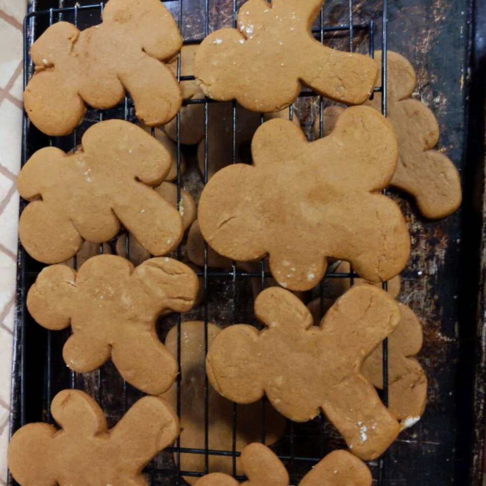

Home
Gingerbread cookies

These Gingerbread Men Cookies are as cute as can be.
If desired, decorate with raisins, currants or cinnamon red hot candies
for eyes and buttons. Or, pipe untinted or colored icing onto cookies.
Ingredients
- 3 cups flour
- 2 teaspoons McCormick® Ginger, Ground
- 1 teaspoon McCormick® Cinnamon, Ground
- 1 teaspoon baking soda
- ¼ teaspoon McCormick® Nutmeg, Ground
- ¼ teaspoon salt
- ¾ cup butter, softened
- ¾ cup firmly packed brown sugar
- ½ cup molasses
- 1 egg
- 1 teaspoon McCormick® Pure Vanilla Extract
Steps
-
Mix flour, ginger, cinnamon, baking soda, nutmeg and salt in large bowl.
Set aside. Beat butter and brown sugar in large bowl with electric mixer
on medium speed until light and fluffy. Add molasses, egg and
vanilla;mix well. Gradually beat in flour mixture on low speed until
well mixed. Press dough into a thick flat disk. Wrap in plastic wrap.
Refrigerate 4 hours or overnight.
-
Preheat oven to 350 degrees F. Roll out dough to 1/4-inch thickness on
lightly floured work surface. Cut into gingerbread men shapes with
5-inch cookie cutter. Place 1 inch apart on ungreased baking sheets.
-
Bake 8 to 10 minutes or until edges of cookies are set and just begin to
brown. Cool on baking sheets 1 to 2 minutes. Remove to wire racks; cool
completely. Decorate cooled cookies as desired. Store cookies in
airtight container up to5 days.